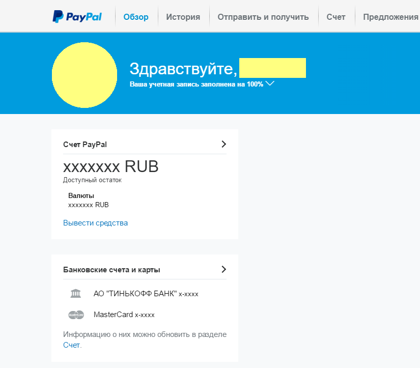
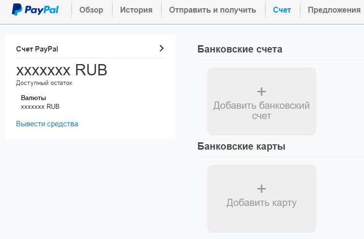
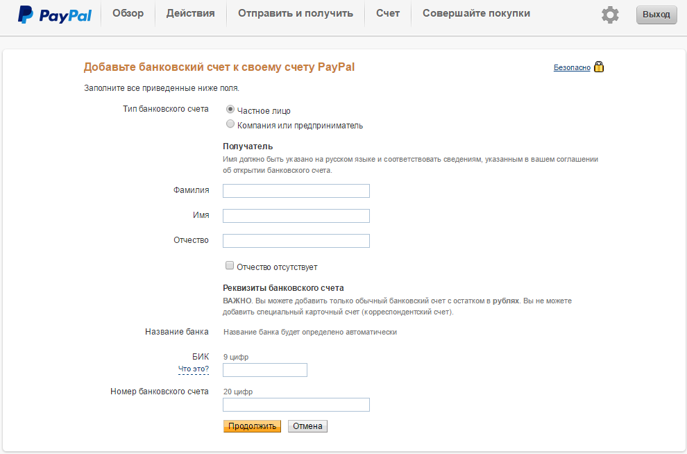
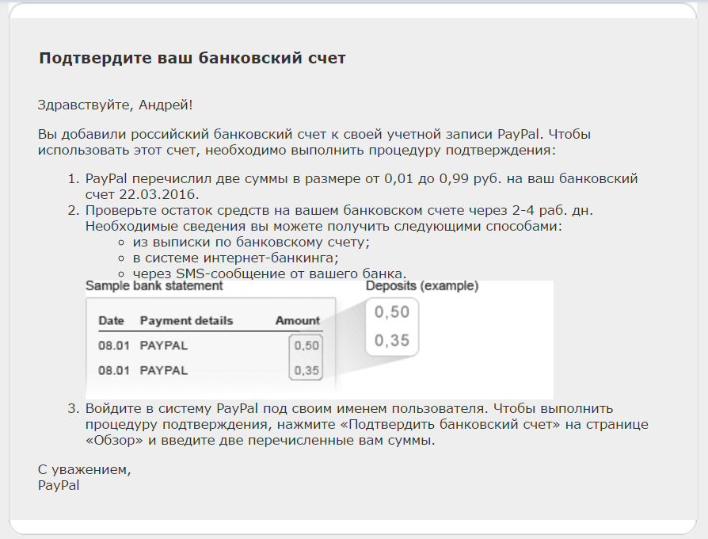
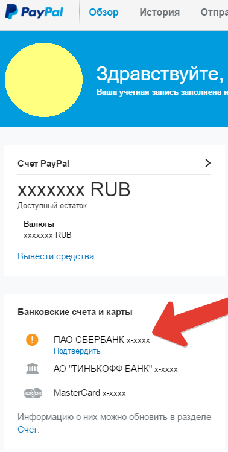
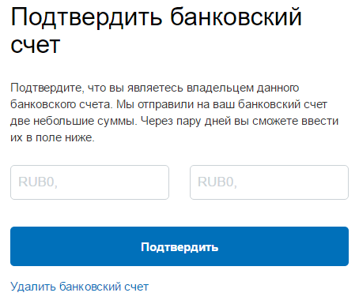
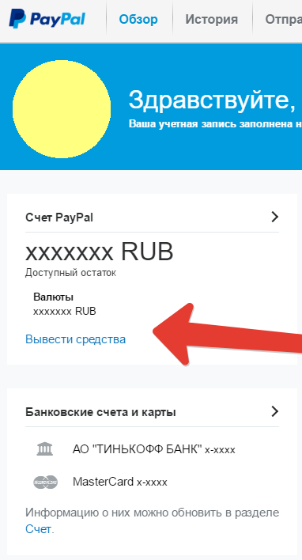
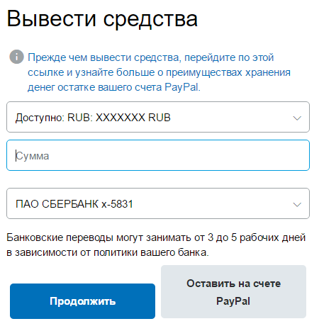

Для начала перейдем в личный кабинет PayPal.

Как мы видим у меня уже привязаны банковские счета и карты и я могу свободно выводить деньги и оплачивать покупки в интернете с помощью пей пал и привязанных банковских карт.
Но давайте разбираться по порядку...
Переходим во вкладку Счета

И мы видим что нам предлагают:
+ Добавить банковский счет
+ Добавить карту
Банковские счета как раз и нужны для вывода средств, а привязка банковской карты позволяет совершать платежи через PayPal используя средства находящиеся на карте.
То есть Счет для вывода средств, Карта для оплаты.
У любой банковской карты есть реквизиты для перевода на счет карты, они то нам и потребуются.
Узнать их можно в договоре который выдают при оформлении карты, либо в личном кабинете на сайте банка.
Если по каким-то причинам у вас нет ни того, ни другого можно позвонить в банк, либо сходить к ним лично и запросить данную информацию.
Нажимаем «+ Добавить банковский счет»

Устанавливаем галочку на частное лицо
и заполняем все предоставленные поля.
А именно это:
Фамилия
Имя
Отчество
Банковский идентификационный код (БИК) – уникальный идентификатор банка состоящий из 9 цифр
и Номер банковского счета — 20 цифр
Жмем ПРОДОЛЖИТЬ, после чего на привязанный к PayPal E-mail приходит письмо с информацией о подтверждении банковского счета.

Где говорится что через 2-4 рабочих дня на привязанный счет, PayPal перечислит 2 копеечные суммы, которые нужно будет указать в системе PayPal, войдя под своим именем пользователя.
Ждем перевода)))
Ура, дождались!!!
После того как к нам на карту пришли 2 небольшие суммы,
заходим в личный кабинет PayPal.

Видим что появился привязанный счет и рядом с ним восклицательный знак.
Нажимаем — подтвердить.
В появившемся окне вводим суммы которые пришли на наш счет.

Первую поступившую сумму в левое окно, вторую в правое и подтверждаем наш банковский счет.
Поздравляю, теперь вы можете выводить деньги с PayPal на вашу карту.
Для этого на главной странице нажимаем на ссылку «Вывести средства»

вводим желаемую сумму, не превышающую ваш остаток на счете, выбираем привязанный банковский счет (если у вас более одного) и подтверждаем.

Обратите внимание что банковские переводы могут занимать от 3 до 6 рабочих дней.